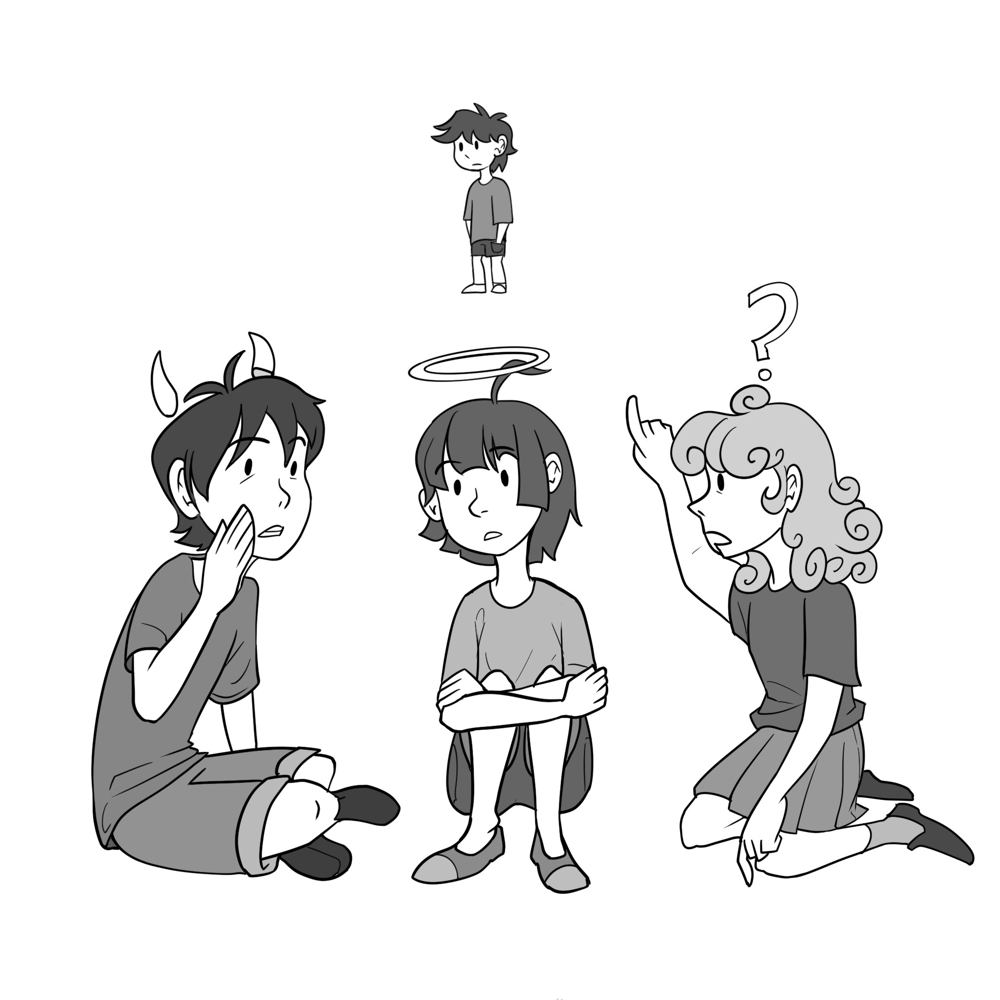

Oftentimes, we don't judge the morality of our actions based on any particular framework, but rather use our intuitive judgments to the best of our ability. The task of moral philosophers is to create a framework that aligns with our intuitive judgments, allowing us to retrospectively or proactively gauge the morality of a particular action. One of the most common moral frameworks, consequentialism, decides the moral value of an action based on the ratio of good to bad results of the action. If the results of an action do more good than harm, the action itself is good, and vice versa. While this may seem like a comprehensive system at first glance, it fails to account for another facet of actions that we intuitively know holds moral weight: intentions. We would not hold a person who engages in a morally blameworthy action while under threat of physical harm to the same standard as we would someone who committed an identical action completely of their own volition, even though the outcomes are the same. The lesson when it comes to our intuitive perceptions of moral appraisal is simple: intention matters.
The importance of intention is reflected in a formula for moral judgement known as the Doctrine of Double Effect (DDE). According to the Doctrine of Double Effect, an action that brings harm to a person is permissible as long as that harm is an unintended consequence of bringing about a greater good, not a means to an end. Even if the actor is certain that harm will result, if the good is fulfilled, any unintended negative consequences are excused. As long as the goal of the action is good and the harm brought about is an unfortunate side effect, a harmful action may still be morally permissible. The DDE creates a pathway for actions that result in harm to still be morally excusable. In essence, the DDE makes a distinction between what we do and what we cause. Doing something that directly harms others is inexcusable, but doing something that causes harm to others, if motivated by the greater good, is excusable.
In "Actions, Intentions, and Consequences: The Doctrine of Double Effect," Warren S. Quinn outlines this Doctrine as well as providing examples, most of which relate to intense, dire circumstances such as war and medical emergency, including what he calls the Strategic Bomber Case vs Terror Bomber Case. In this example, a strategic bomber in a war destroys a key military target that will decrease the enemy's production capabilities. Unfortunately, several innocent civilians who live nearby are killed in the blast. Quinn contrasts this example with that of the terror bomber, who attacks the same location, but with the intent of killing civilians to weaken the enemy's morale. Intuitively, we view the morality of both of these actions differently, and the DDE reflects that difference. For the terror bomber, the harm is necessary to achieving their goal, but for the strategic bomber, it is an unfortunate, unintended consequence and is therefore excusable.1
Although Quinn's examples help us understand the DDE, I believe that they incorrectly present the DDE as a framework of moral judgment that is restricted only to extreme cases in which human life is on the line. I will return to looking at the DDE through an extreme case later in this paper when I present my objection, but I first want to prove that the Doctrine can be used to judge day-to-day decisions. To accomplish this, I would like to propose an original example, one that illustrates that the DDE is relevant to moral choices present in everyday life. This pair of cases may have been experienced by several of us in our youth, a set of cases I will call Gossiping Tweens:
Becky: Becky tells Amanda that Brayden has been saying things about her behind her back. Becky knows that Amanda will be angry, and a conflict will likely start, but she thinks that Amanda has the right to know what is being said about her. As expected, Amanda is furious and rushes to confront Brayden.
Callie: Callie tells Amanda that Brayen has been saying things about her behind her back. Callie knows Amanda will be angry, and she really wants the drama of seeing a fight between Amanda and Brayden.
It is readily apparent that both the Becky and Callie versions of the Gossiping Tweens case lead to the same result-Amanda sparking a conflict with Brayden. However, the Doctrine of Double Effect encourages us to morally appraise both versions differently. For Callie, the harm resulting from a conflict between Amanda and Brayden is not an unfortunate side effect; it is the entire goal of her choice. Alternatively, for Becky, truth is the goal, and conflict is an unintended but expected result. Even though both girls can accurately expect the harm that will result from their actions, the Doctrine of Double Effect encourages us to view Callie's choice as morally blameworthy, but not Becky's.
It would seem that the Doctrine of Double Effect is an intuitive and straightforward formula for moral appraisal, infallible in both everyday and high-stakes cases, but when we attempt to assess a new case, political assassination, it offers a judgment that our intuitive moral compass likely deems disturbing.
Consider a wartime predicament: members of a rebellion against a fascist regime know that assassinating the dictator will create a better society. Unfortunately, they don't have the ability to get fighters close enough to kill him alone. Instead, their only feasible method of successful assassination is bombing, which they are sure will also cost the lives of dozens of unlucky citizens. To put the situation in terms best suited for analysis by the Doctrine of Double Effect, the goal is to create a better society, the method is the assassination of the dictator, and innocent lives are an unwanted but certain consequence.
Of course, creating a better society is a morally praiseworthy goal, and the DDE treats it as such. However, it deems the action morally wrong because killing the dictator causes a death that is necessary to the completion of the goal. Yet, since the action is committed for the greater good, it is not losing the innocent civilians that makes it morally wrong. This is directly opposite from our intuition about what would make this action morally wrong.
Intuitively, causing the death of several innocent civilians is morally reprehensible while killing a single dictator is far less so and, in some circumstances, may even be considered a moral good. So, how can it be that, in a formula supposed to determine the morality of an action, the assassination of the dictator holds moral weight while the death of the civilians holds none?
The Doctrine of Double Effect excuses the unintended death of innocents but condemns the purposeful assassination of anyone, regardless of potential positive impacts their death could have on the world.
This disturbing consequence of the Doctrine seems as if it can undermine it entirely. However, if we reframe our views on what the Doctrine actually judges, this worry can be circumvented. We are used to judging actions through a consequentialist lens, focusing entirely on the results of an action itself to judge its morality. Even though the definition of the Doctrine of Double Effect is explicit in the fact that, when using it, we must focus on the actor, this objection comes from our instinct to judge consequentially. In this objection, we still lend our attention to the consequences of the action. We see that the killing of the dictator is morally wrong and the civilian deaths are morally neutral and wonder how an effective system of moral appraisal could lead to such counterintuitive conclusions. By doing this, we are still, like a consequentialist, weighing the morality of effects against each other. But this is not what the Doctrine of Double Effect asks of us.
When we make moral appraisals using the Doctrine of Double Effect, we must imagine that the actor and the action exist in a vacuum. The only considerations we need to make are what the actor's motivation is and what it is that they are motivated to do. If both of these things are morally excusable, so is the action. This assumption of a sort of "moral vacuum" eliminates the consideration of indirect consequences and is what allows the Doctrine of Double Effect to consider indirect loss of life resulting from an action morally negligible. The indirect loss of life is not morally neutral because it is considered and ruled neutral, but because it is never part of the moral equation at all.
Even with this conceptual reframing that allows the Doctrine of Double Effect to survive the objection I have proposed, it may still seem distasteful to adhere to a system of moral appraisal that doesn't even factor the indirect loss of innocent lives into the moral equation. Yet the consequentialist standard, which holds people who engage in morally blameworthy acts to the same standard whether they are forced to do it or do it of their own free will, seems equally unrealistic in practice. Needless to say, the field of moral philosophy is extremely complicated. In a sea of complex human emotions and choices, it is nearly impossible to create a system for moral appraisal that can offer the proper judgement when faced with the almost endless number of motivations, actions and effects that occur over the course of every life. As we can see from the promises and pitfalls of the Doctrine of Double Effect, the job of the moral philosopher isn't necessarily to create a foolproof framework for moral judgement, the job is to try and to grow closer each time.
1 Quinn, Warren S. "Actions, Intentions, and Consequences: The Doctrine of Double Effect." Philosophy & Public Affairs 18, no. 4 (1989): 334-51. http://www.jstor.org/stable/2265475.